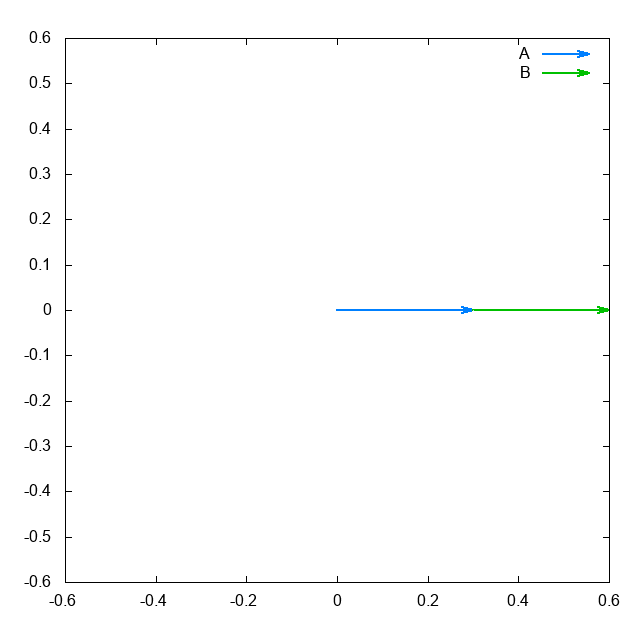

# Simulations
これまでに作ったシミュレーションとかのまとめ。

円周率プール
G.Galperin (2003) の "Playing Pool with PI" を可視化したもの。 比重が異なる２つの積み木を弾性衝突させることで円周率を任意の桁数まで算出することが出来る。

２重振り子
２つの振り子が連結している２重振り子のシミュレーション。 カオス運動の一例。
これまでに作ったシミュレーションとかのまとめ。
G.Galperin (2003) の "Playing Pool with PI" を可視化したもの。 比重が異なる２つの積み木を弾性衝突させることで円周率を任意の桁数まで算出することが出来る。
２つの振り子が連結している２重振り子のシミュレーション。 カオス運動の一例。